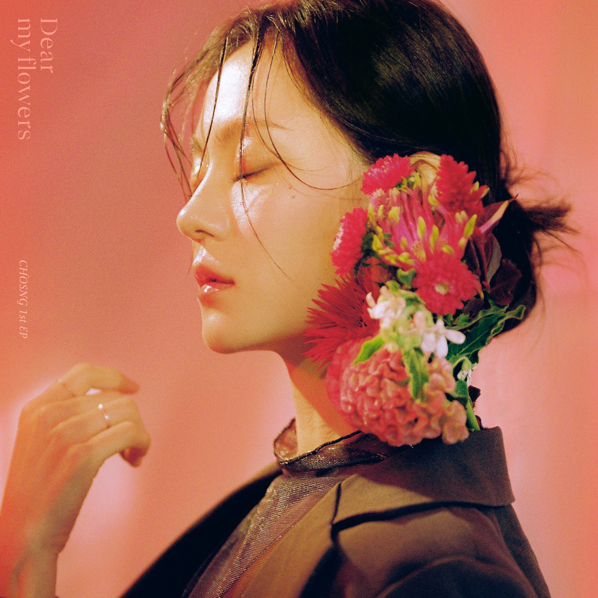

안녕하세요 라보엠입니다.
오늘은 운전중 라디오에서 너무 아름다운 노래를 듣고 소개해드리려고 합니다. 바로 초승의 노래 호수인데요, 이 곡은 초승의 첫 EP 앨범 꽃들에게의 타이틀곡으로, 2022년에 발매되어 많은 사랑을 받았습니다.
초승 호수 MV
호수는 잔잔하면서도 깊이 있는 감성을 담은 곡입니다. 초승의 따뜻하고 맑은 음색이 노래의 분위기와 잘 어우러져 청자의 마음을 어루만지는, 잔잔한 피아노 선율과 스트링 연주가 돋보이는 곡입니다. 초승의 부드러운 보컬이 감성적인 멜로디와 어우러져 듣는 이의 마음을 울립니다. 특히 후렴구의 "아직은 너 없는 밤이 너무 어렵고"라는 부분에서 초승의 호소력 있는 목소리가 인상적입니다.
초승 노래 호수 가사
1.
나 그대의 호수에 잠겨
말없이 밤새 뒤척이다
멀어지는 날들이
흘러가는 날들이
흩어지는 것을 보네
뜻밖에도 나는
이 한참을 버려도
다시 또 뒤적거려서
내 안에 법들은
'너 하나뿐'이 되어간다
아직은 너 없는 밤이 너무 어렵고
나는 아무 말들에 의미를 붙이고
아직도 전하지 못한 맘들은
더 멀어져가네
2.
그럼에도 나는
이 한켠에 두었던
맘을 또 뒤적거려서
내 안에 것들은
너 하나로 다 채워진다
아직은 너 없는 밤이 너무 어렵고
나는 아무 말들에 의미를 붙이고
아직도 전하지 못한 맘들은
더 멀어져
아직은 너 없는 밤이 너무 어렵고
나는 아무 말들에 의미를 붙이고
아직도 전하지 못한 맘들은
더 멀어져가네
우리의 말들 더 멀어져가네
이 노래의 가사는 참솜의 기덕 님이 작사했습니다. 가사 중 "아직은 너 없는 밤이 너무 어렵고"라는 구절이 특히 인상적인데요. 이별 후의 쓸쓸함과 그리움을 호수에 비유해 표현한 것이 매력적입니다.
"나 그대의 호수에 잠겨
말없이 밤새 뒤척이다
멀어지는 날들이
흘러가는 날들이
흩어지는 것을 보네"
이 구절들은 사랑하는 사람을 잃은 후의 공허함과 상실감을 호수의 이미지로 표현하고 있습니다. 호수처럼 고요하지만 깊은 슬픔이 느껴지는 가사입니다. 이별의 아픔을 겪은 사람들에게 위로가 되는 노래입니다.
초승 EP 앨범 꽃들에게
호수가 수록된 EP 앨범 꽃들에게는 초승의 데뷔 앨범입니다. 이 앨범은 위로라는 키워드를 중심으로 구성되었습니다. 초승은 이 앨범을 통해 대중들에게 첫인사를 드리는 만큼 많은 고민 끝에 앨범의 컨셉과 이야기를 잡았다고 합니다. 앨범에는 호수 외에도 여러 감성적인 곡들이 수록되어 있습니다. 각 곡마다 초승의 섬세한 감성이 깃든 목소리와 따뜻한 위로의 메시지가 담겨 있어, 듣는 이들에게 공감과 위안을 줍니다.

아티스트 초승 소개
초승은 2022년 데뷔한 신예 싱어송라이터입니다. 본명은 조승민으로, 초승이라는 예명에는 자신의 이름 'CHO'를 담으면서도 여리고 사연 있어 보이는 느낌을 주고 싶었다고 합니다. 고등학교 3학년 때 우연히 실용음악학원에서 첫 수업을 받은 후 음악의 매력에 빠져 진로를 바꾸게 되었다고 하네요.
맺음말
초승의 호수는 잔잔하면서도 깊이 있는 감성으로 많은 이들의 마음을 어루만진 곡입니다. 초승의 맑고 따뜻한 음색과 감성적인 가사, 아름다운 멜로디가 어우러져 듣는 이들에게 위로와 공감을 전합니다. 추운 겨울에 들으면 마음이 따뜻해지는 느낌입니다. 여러분도 한번 들어보시면 좋겠어요. 특히 조용한 밤이나 쓸쓸한 마음일 때 들으면 더욱 와닿을 것 같습니다. 초승의 따뜻한 목소리가 여러분의 마음속 호수에 잔잔한 파문을 일으키길 바랍니다.